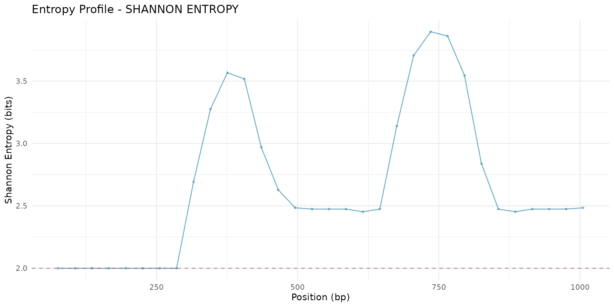
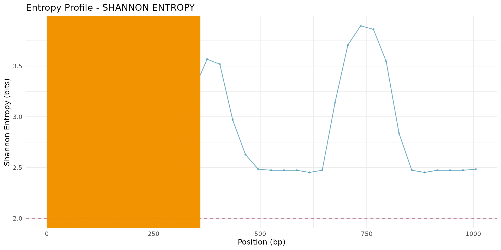
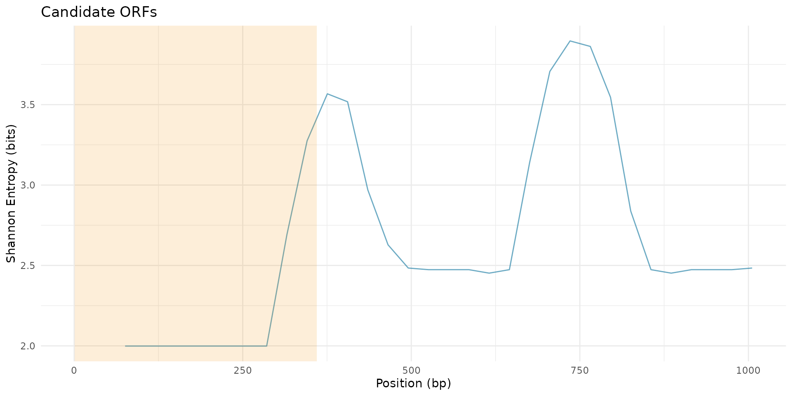
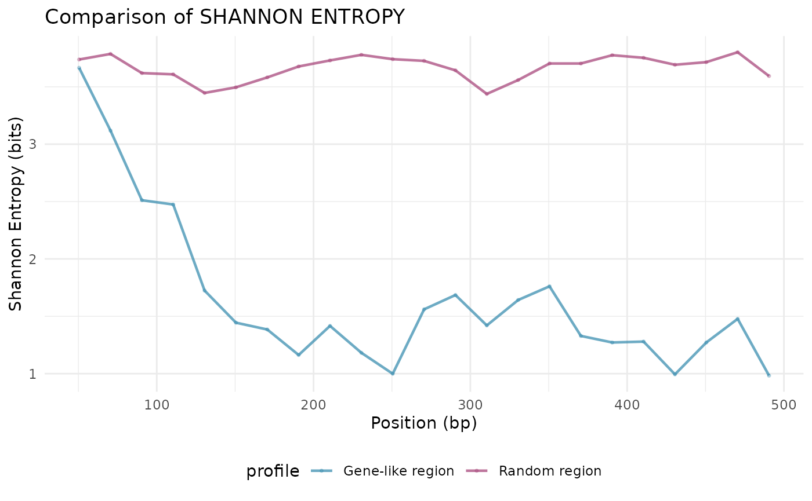

GeneScout: De Novo Small ORF Discovery
Dany Mukesha
2026-01-21
Source:vignettes/GeneScout.Rmd
GeneScout.RmdAbstract
A toolkit to identify hidden genes in non-coding DNA using statistical information theory. It implements sliding window entropy scanning, Shannon entropy calculation, and Kullback-Leibler divergence to discover potential small open reading frames (ORFs) in genomic sequences without requiring prior annotation.
The problem: Even in well-studied genomes, large stretches of “junk” DNA actually contain small, hidden genes. These can be identified by looking for patterns in codon usage using entropy analysis.
- In non-coding DNA, codons appear randomly (high entropy)
- In real genes, organisms prefer specific codons (low entropy)
GeneScout provides tools to calculate codon usage
profiles from known genes, scan large genomic regions with a sliding
window, identify regions with low entropy (potential coding regions),
and find candidate ORFs within those regions
Quick start
Basic enthropy calculation
First, calculate codon frequencies and Shannon entropy for a sequence:
# Example sequence (biased codon usage)
sequence1 <- "ATGATGATGATGATGATGTTATTATTATTATTATTATTACGCCGCCGCCGCCGCC"
freqs <- calculate_codon_frequencies(sequence1)
print(head(freqs[freqs > 0]))## TTA CGC ATG
## 0.3888889 0.2777778 0.3333333
entropy <- calculate_shannon_entropy(freqs)
print(paste("Shannon Entropy:", round(entropy, 3), "bits"))## [1] "Shannon Entropy: 1.572 bits"Create a reference profile
For de novo discovery, create a reference profile from known genes:
# Known gene sequences (would normally be from annotated genes)
known_genes <- c(
"ATGATGATGATGCCGCCGCCGCCTTATTATTATTAG",
"ATGCCGCCGCCGCCATTATTATTAATGTTTTTTTTT",
"ATGTTTTTTTTTTTACGCCGCCGCCGCCGAGTAA"
)
# Create reference codon usage profile
ref_profile <- create_reference_profile(known_genes, method = "mean")
print(head(ref_profile[ref_profile > 0]))## CCA CGA GTA TTA CGC TAG
## 0.02777778 0.03030303 0.03030303 0.11363636 0.12121212 0.02777778Sliding window scan
Perform a genome-wide scan to find regions matching the reference profile:
# Create a longer test sequence with embedded "gene-like" regions
test_sequence <- paste0(
paste0(rep("ACGTACGTACGT", 30), collapse = ""), # Random region
"ATGATGATGATGCCGCCGCCGCCTTATTATTATTA", # Embedded ORF
paste0(rep("TGACTGACTGA", 30), collapse = ""), # Random region
"ATGCCGCCGCCGCCATTATTATTAATGTTTTTTTTTTAG", # Another ORF
paste0(rep("GATCGATCGAT", 30), collapse = "") # Random region
)
# Scan with sliding window
scan_result <- sliding_window_scan(
test_sequence,
window_size = 150,
step_size = 30,
reference_profile = ref_profile
)
# View results
print(scan_result)## GeneScout Sliding Window Scan Results
## =======================================
## Number of windows: 32
## Sequence range: 1 - 1080 bp
##
## Entropy Statistics:
## Mean Shannon Entropy: 2.665 bits
## Std. Dev. Shannon Entropy: 0.598 bits
## Min Shannon Entropy: 1.999 bits
## Max Shannon Entropy: 3.896 bits
##
## KL Divergence Statistics:
## Mean KL Divergence: 23.452
## Std. Dev. KL Divergence: 3.108Detect Entropy Peaks
Identify regions with unusually low entropy:
# Detect peaks in entropy profile
peaks <- entropy_peak_detection(
scan_result,
metric = "shannon_entropy",
method = "quantile",
threshold = 0.1,
min_peak_width = 3
)
print(peaks)## peak_id start_window end_window num_windows start_bp end_bp metric_value_mean
## 1 1 1 8 8 1 360 1.998846
## metric_value_min
## 1 1.998846Find candidate ORFs
Search for actual ORFs within the low-entropy peaks:
# Find candidate ORFs
candidates <- find_candidate_orfs(
test_sequence,
scan_result,
peaks,
min_orf_length = 60,
start_codons = c("ATG"),
stop_codons = c("TAA", "TAG", "TGA")
)
print(candidates)## # A tibble: 0 × 0Visualize results
Create plots to visualize entropy profiles and candidate ORFs:
# Plot entropy profile
plot_entropy_profile(scan_result,
metric = "shannon_entropy",
highlight_threshold = TRUE)
# Plot with peaks highlighted
plot_entropy_profile(scan_result,
peaks = peaks,
metric = "shannon_entropy",
show_peaks = TRUE)
# Plot candidate ORFs
plot_candidate_orfs(scan_result, candidates, peaks, metric = "shannon_entropy")
Advanced usage
Comparative analysis
Compare entropy profiles between different regions:
# Create two different sequences
# APOE coding region (simulated longer fragment for demo, ~4 kb)
seq_region1 <- paste0(
"ATGGAGGAGCCGCAGTCAGATCCTAGCGTCGAGCAGGAGAGCTGCGGGAGGAGCGGAGGCTG",
"GAGGCCGCGGAGGAGCTGGCGGAGGCGGAGGAGGCGGAGGAGCCGCGGAGGAGGAGGAGGAG",
"GCCGCGGAGGAGGCGGAGGAGGAGGAGGAGGAGGAGGAGGAGGAGGAGGAGGAGGAGGAGGA",
"GAGGAGGAGGAGGAGGAGGAGGAGGAGGAGGAGGAGGAGGAGGAGGAGGAGGAGGAGGAGGA",
"GAGGAGGAGGAGGAGGAGGAGGAGGAGGAGGAGGAGGAGGAGGAGGAGGAGGAGGAGGAGGA",
"GCCGCGGAGGAGGCGGAGGAGGAGGAGGAGGAGGAGGAGGAGGAGGAGGAGGAGGAGGAGGA",
"GAGGAGGAGGAGGAGGAGGAGGAGGAGGAGGAGGAGGAGGAGGAGGAGGAGGAGGAGGAGGA",
"GAGGAGGAGGAGGAGGAGGAGGAGGAGGAGGAGGAGGAGGAGGAGGAGGAGGAGGAGGAGGA",
"GAGGAGGAGGAGGAGGAGGAGGAGGAGGAGGAGGAGGAGGAGGAGGAGGAGGAGGAGGAGGA"
)
# Random-like region from chr19 (simulated, ~4 kb)
seq_region2 <- paste0(
"GCGTACGTAGCTAGCGTAGCTACGTAGCTAGCTGACGATCAGTGCTAGCTAGCTAGCGTAC",
"GATCGATCGATCGTAGCTAGCTAGCTAGCGTACGATCGATCGTAGCTAGCTAGCTGACGAT",
"CGTAGCTAGCTGACGATCGTACGATGCTAGCTAGCTGATCGTAGCTAGCTAGCTAGCGTAC",
"GATCGATCGTAGCTAGCTAGCTGACGATCGTAGCTAGCTGACGATCGTACGATGCTAGCTA",
"TACGATCGATCGATCGTAGCTAGCTAGCTAGCGTACGATCGATCGTAGCTAGCTAGCTGAC",
"GATCGTAGCTAGCTGACGATCGTACGATGCTAGCTAGCTGATCGTAGCTAGCTAGCTAGCG",
"TACGATCGATCGTAGCTAGCTAGCTGACGATCGTAGCTAGCTGACGATCGTACGATGCTAG",
"CTATACGATCGATCGATCGTAGCTAGCTAGCTAGCGTACGATCGATCGTAGCTAGCTAGCT",
"GACGATCGTAGCTAGCTGACGATCGTACGATGCTAGCTAGCTGATCGTAGCTAGCTAGCTA"
)
# Scan both regions
result1 <- sliding_window_scan(seq_region1, window_size = 100, step_size = 20)
result2 <- sliding_window_scan(seq_region2, window_size = 100, step_size = 20)
# Compare profiles
compare_entropy_profiles(result1, result2,
labels = c("Gene-like region", "Random region"))
Working with genomes
For large genomes, process chromosome by chromosome:
# Read genome FASTA file (https://parasite.wormbase.org/index.html)
genome <- read_fasta("../data/acanthocheilonema_viteae.PRJEB1697.WBPS19.genomic.fa")
# Extract known genes from GTF annotation file
known_genes <- extract_known_genes(
gtf_file = "../data/acanthocheilonema_viteae.PRJEB1697.WBPS19.canonical_geneset.gtf",
genome_fasta = "../data/acanthocheilonema_viteae.PRJEB1697.WBPS19.genomic.fa",
feature_type = "gene",
min_length = 150,
max_genes = 1000
)
# Create reference profile from extracted genes
ref_profile <- create_reference_profile(known_genes[1:11])
# Process one chromosome
chr_name <- names(genome)[1]
chr_sequence <- as.character(genome[1])
# Scan chromosome
chr_scan <- sliding_window_scan(
chr_sequence,
window_size = 300,
step_size = 30,
reference_profile = ref_profile
)
# Detect peaks and find ORFs
peaks <- entropy_peak_detection(chr_scan, threshold = 0.05)
candidates <- find_candidate_orfs(chr_sequence, chr_scan, peaks)
# Save results
write.csv(candidates, paste0("candidates_", chr_name, ".csv"))Theory behind GeneScout
Shannon enthropy
Shannon entropy measures the “surprise” or randomness of data:
Where is the frequency of codon .
- High entropy (~6 bits): Random codon usage (non-coding DNA)
- Low entropy (~3-4 bits): Biased codon usage (potential gene)
Kullback-Leibler divergance
KL divergence measures how one distribution differs from another:
Where is the observed frequency and is the reference frequency.
- High KL: Window differs from organism’s typical codon usage
- Low KL: Window matches organism’s typical codon usage
Effective Number of Codons (ENC)
ENC is another measure of codon usage bias:
# Calculate ENC for different sequences
seq_uniform <- paste(rep(c("ATG", "TTT", "CCC", "GGG", "AAA", "TTT"), 10),
collapse = "")
seq_biased <- paste(rep("ATG", 60), collapse = "")
freqs_uniform <- calculate_codon_frequencies(seq_uniform)
freqs_biased <- calculate_codon_frequencies(seq_biased)
enc_uniform <- calculate_enc(freqs_uniform)
enc_biased <- calculate_enc(freqs_biased)
print(paste("Uniform sequence ENC:", round(enc_uniform, 2)))## [1] "Uniform sequence ENC: 61"## [1] "Biased sequence ENC: 61"ENC ranges from 20 (extreme bias) to 61 (no bias).
Parameter tuning
Window size
The choice of window size affects sensitivity:
- Small windows (50-100 bp): Higher sensitivity, more noise
- Large windows (300-500 bp): More stable, may miss small ORFs
# Compare different window sizes
windows <- c(100, 150, 300)
results <- lapply(windows, function(ws) {
sliding_window_scan(test_sequence, window_size = ws, step_size = 30)
})Step size
Step size determines resolution:
- Small step (10-20 bp): Fine-grained scan, slower
- Large step (30-50 bp): Faster scan, may miss features
Threshold selection
Use different methods to set entropy thresholds:
# Quantile-based threshold
peaks_quantile <- entropy_peak_detection(
scan_result,
method = "quantile",
threshold = 0.1
)
# Standard deviation-based threshold
peaks_sd <- entropy_peak_detection(
scan_result,
method = "sd",
threshold = 1.5
)Integration with RNA-Seq
For validation, integrate with RNA-seq expression data:
# Load RNA-seq coverage data
coverage <- readRDS("rnaseq_coverage.rds")
# Add expression information to candidates
candidates_with_expr <- dplyr::mutate(candidates,
mean_coverage = sapply(1:nrow(candidates), function(i) {
mean(coverage[candidates$start[i]:candidates$end[i]])
})
)
# Filter by expression
expressed_candidates <- dplyr::filter(
candidates_with_expr,
mean_coverage > 5
)Performance consideration
For large genomes:
- Process by chromosome: Avoid loading entire genome into memory
- Use parallel processing: Scan different chromosomes in parallel
- Optimize parameters: Larger step sizes reduce computation
- Filter early: Exclude low-complexity regions before scanning
# Parallel scanning example
library(parallel)
library(foreach)
library(doParallel)
cl <- makeCluster(detectCores() - 1)
registerDoParallel(cl)
results <- foreach(chr = chromosome_names) %dopar% {
chr_seq <- as.character(genome[chr])
sliding_window_scan(chr_seq, window_size = 300, step_size = 30)
}
stopCluster(cl)References
- Wright, F. (1990). The ‘effective number of codons’ used in a gene. Gene, 87(1), 23-29.
- Sharp, P. M., & Li, W. H. (1987). The codon Adaptation Index-a measure of directional synonymous codon usage bias, and its potential applications. Nucleic Acids Research, 15(3), 1281-1295.
Session information
## R version 4.5.2 (2025-10-31)
## Platform: x86_64-pc-linux-gnu
## Running under: Ubuntu 24.04.3 LTS
##
## Matrix products: default
## BLAS: /usr/lib/x86_64-linux-gnu/openblas-pthread/libblas.so.3
## LAPACK: /usr/lib/x86_64-linux-gnu/openblas-pthread/libopenblasp-r0.3.26.so; LAPACK version 3.12.0
##
## locale:
## [1] LC_CTYPE=C.UTF-8 LC_NUMERIC=C LC_TIME=C.UTF-8
## [4] LC_COLLATE=C.UTF-8 LC_MONETARY=C.UTF-8 LC_MESSAGES=C.UTF-8
## [7] LC_PAPER=C.UTF-8 LC_NAME=C LC_ADDRESS=C
## [10] LC_TELEPHONE=C LC_MEASUREMENT=C.UTF-8 LC_IDENTIFICATION=C
##
## time zone: UTC
## tzcode source: system (glibc)
##
## attached base packages:
## [1] stats graphics grDevices utils datasets methods base
##
## other attached packages:
## [1] GeneScout_0.1.0 BiocStyle_2.38.0
##
## loaded via a namespace (and not attached):
## [1] SummarizedExperiment_1.40.0 gtable_0.3.6
## [3] rjson_0.2.23 xfun_0.56
## [5] bslib_0.9.0 ggplot2_4.0.1
## [7] lattice_0.22-7 Biobase_2.70.0
## [9] vctrs_0.7.0 tools_4.5.2
## [11] bitops_1.0-9 generics_0.1.4
## [13] stats4_4.5.2 curl_7.0.0
## [15] parallel_4.5.2 tibble_3.3.1
## [17] pkgconfig_2.0.3 Matrix_1.7-4
## [19] RColorBrewer_1.1-3 cigarillo_1.0.0
## [21] S7_0.2.1 desc_1.4.3
## [23] S4Vectors_0.48.0 lifecycle_1.0.5
## [25] compiler_4.5.2 farver_2.1.2
## [27] stringr_1.6.0 Rsamtools_2.26.0
## [29] textshaping_1.0.4 Biostrings_2.78.0
## [31] Seqinfo_1.0.0 codetools_0.2-20
## [33] htmltools_0.5.9 sass_0.4.10
## [35] RCurl_1.98-1.17 yaml_2.3.12
## [37] pillar_1.11.1 pkgdown_2.2.0
## [39] crayon_1.5.3 jquerylib_0.1.4
## [41] tidyr_1.3.2 BiocParallel_1.44.0
## [43] DelayedArray_0.36.0 cachem_1.1.0
## [45] abind_1.4-8 tidyselect_1.2.1
## [47] digest_0.6.39 stringi_1.8.7
## [49] dplyr_1.1.4 purrr_1.2.1
## [51] restfulr_0.0.16 bookdown_0.46
## [53] labeling_0.4.3 fastmap_1.2.0
## [55] grid_4.5.2 SparseArray_1.10.8
## [57] cli_3.6.5 magrittr_2.0.4
## [59] S4Arrays_1.10.1 XML_3.99-0.20
## [61] withr_3.0.2 scales_1.4.0
## [63] rmarkdown_2.30 XVector_0.50.0
## [65] httr_1.4.7 matrixStats_1.5.0
## [67] ragg_1.5.0 evaluate_1.0.5
## [69] knitr_1.51 GenomicRanges_1.62.1
## [71] IRanges_2.44.0 BiocIO_1.20.0
## [73] rtracklayer_1.70.1 rlang_1.1.7
## [75] glue_1.8.0 BiocManager_1.30.27
## [77] BiocGenerics_0.56.0 jsonlite_2.0.0
## [79] R6_2.6.1 MatrixGenerics_1.22.0
## [81] GenomicAlignments_1.46.0 systemfonts_1.3.1
## [83] fs_1.6.6